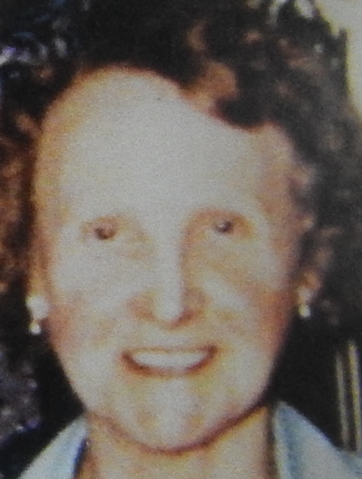
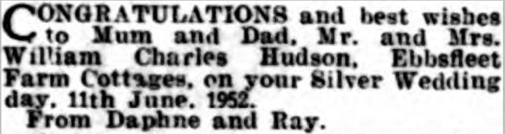
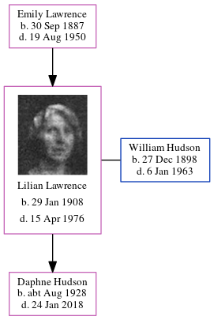

Lilian Florence Hudson (née Lawrence) 1908 - 1976
[ Home ] | [ Calendar ] | [ Surnames Index ] | [ Errors ] | [ Family History ]The child of Emily Lawrence, Lilian Lawrence, (also known as Lillian Cowell) the aunt of Nigel Horne, was born in Minster, Thanet, Kent, England on 29 Jan 19081,2,3,4,5,6, was baptised there on 21 Feb 1908 and also married William Hudson (a milkman with whom she had 1 child, Daphne Patricia) there at St Mary the Virgin Church on 11 Jun 19277.
During her life, she was living at 13 Ashburnham Road, St Lawrence, Thanet, Kent, England on 2 Apr 19119; at 7 Pouces Cottages, Minster in Thanet on 19 Jun 19212; at Ebbsfleet Farm Cottages, Ebbsfleet, Kent on 29 Sept 19393; on Ebbsfleet Farm Cottages, Ebbsfleet Lane, Ebbsfleet, Kent in 1952; and at 4 Ebbsfleet Farm Cottages, Ebbsfleet Lane, Ebbsfleet, Kent in 19638.
She died on 15 Apr 1976 in Minster5.
Parents
- Emily Jane was born on 30 Sept 1887
Children
- Daphne Patricia was born c. Aug 1928
Citations
- 1911 England Census Online publication - Provo, UT, USA: Ancestry.com Operations, Inc., 2011.Original data - Census Returns of England and Wales, 1911. Kew, Surrey, England: The National Archives of the UK (TNA), 1911. Data imaged from the National Archives, London, England.
- 1921 Census Of England & Wales - Findmypast (was age 13 and the daughter of the head of the household)
- 1939 Register - Findmypast (was the wife of the head of the household)
- England & Wales deaths 1837-2007 - Findmypast
- England & Wales, Death Index: 1984-2005 Online publication - Provo, UT, USA: The Generations Network, Inc., 2007.Original data - General Register Office. England and Wales Civil Registration Indexes. London, England: General Register Office. © Crown copyright. Published by permission of the Cont
- England & Wales, FreeBMD Birth Index, 1837-1915 Online publication - Provo, UT, USA: The Generations Network, Inc., 2006.Original data - General Register Office. England and Wales Civil Registration Indexes. London, England: General Register Office. © Crown copyright. Published by permission of the Cont
- Kent, Canterbury Archdeaconry marriages 1538-1928 - Findmypast
- From her husband's probate
- 1911 Census for England & Wales - Findmypast (was age 3 and the daughter of the head of the household)
Media
Lillian Lawrence
Lilian Lawrence - 2

East Kent Times and Mail - 7 Jun 1952

1911 England, Wales & Scotland Census Transcription - GBC-1911-RG14-04528-0357-1
1911 England, Wales & Scotland Census Transcription - GBC-1911-RG14-04528-0357-3
England & Wales births 1837-2006 - BMD/B/1908/1/AZ/000367/333
Canterbury Marriages - GBPRS/CANT/M/97045503/1
England & Wales deaths 1837-2007 - BMD/D/1976/2/AZ/000516/029
England & Wales deaths 1837-2007 - BMD/D/1976/2/AZ/000515/132
1939 Register Transcription - TNA-R39-1820-1820H-018-04
England Births & Baptisms 1538-1975 - R_884575875
1921 Census Of England & Wales - GBC/1921/RG15/04430/0279/03
Family Tree
Map
Generated by ged2site. Last updated on Jul 3, 2024
Known Issues
Residence record for 1952 contains no citation